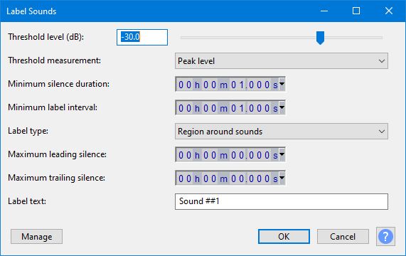
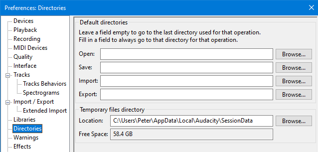
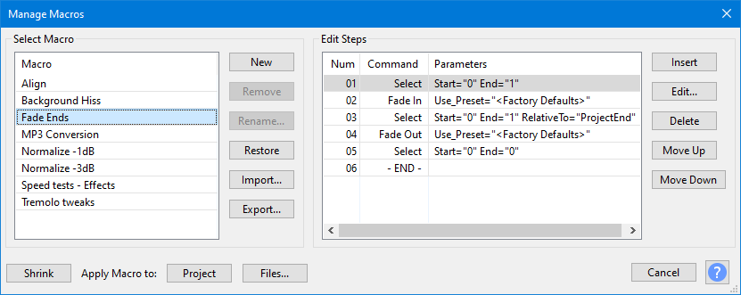
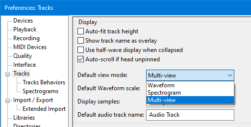
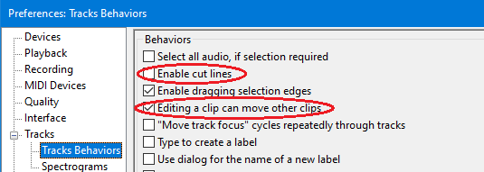

New features in this release
Version 3.0.0 is primarily a release for a unitary, single self-contained, project file.
- Details of all the major changes since 2.4.2 can be found in Audacity Release Notes 3.0.0.
Contents
- Unitary Project
- Backing up your project
- Two new Languages added
- Label Sounds replaces Sound Finder and Silence Finder
- Enhanced Directories preferences
- Improvements to Macros
- Noise Gate improved
- Multi-view can be set as user-default view
- Preferences settings that affect Edit behavior
- Mixer Board improvement
- Repeat last Generator, Analyzer or Tool
- Nyquist Upgrade
- Bug Fixes
Unitary Project
Audacity 3.0.0 introduces the new AUP3 project format. Project files saved with this version will have an aup3 extension, for example My-Project.aup3. We believe that this new project format will make life easier for Audacity users, as it replaces the previous project storage format - which used an AUP file and its associated _data folder full of little audio clips - with a single project file that integrates those two parts.
The old structure caused too many users to lose or damage their projects by moving or deleting the project components. The new single project file structure precludes that happening.
- Note that saving as AUP3 will leave behind the old AUP file and its associated _data folder which you will probably want to delete to recover disk space.
Once you have saved the project in the new AUP3 format they can then no longer be opened in previous versions of Audacity.
|
| Active projects cannot be saved to a FAT/FAT32 formatted drive as FAT is subject to a maximum file size of 4GB which can easily be temporarily exceeded when editing. |
For more details please see Managing Audacity Projects
Project size
Saved Projects with the new unified file structure should not be larger than similar projects with the old multiple files structure.
As you work on a project, Audacity will consume additional temporary disk space. This is normally released on closing the project. This is not new with Unitary Project File, previous versions of Audacity also used to do this.
You can, if you wish, compress your project removing the temporary storage with:
But note carefully that this will remove your Undo History and the contents of your Audacity clipboard. |
Performance
Extensive speed testing has shown that for most work in Audacity the new project file can be a little faster than the old project structure.
This is especially true of using the Effects and Generators which run faster with the new project file.
You will get a progress dialog informing you about the Compaction progress.
Automatic Recovery
Automatic Recovery (following a crash) is different in Audacity 3.0.0. It is simpler with no orphan block-files or missing block-files to worry about
- When Audacity is launched following a crash it will offer to recover the crashed projects.
- You can choose to either accept the recovery or to discard the projects.
- You can select projects for either action by clicking on their checkbox, or you can select all by clicking on Select.
- You can discard just some and then the recovery dialog will remain open enabling you to select others for recovery.
For more details please see Automatic Crash Recovery
Temporary work files
In addition to the single database project file the database also creates two temporary work files WAL & SHM files. For example My-Project.aup3-wal and My-Project.aup3-shm. On Mac there is only the WAL file.
These are deleted on closure of the project or on exit from Audacity.
| Do not delete them or move these temporary files while the project is open as this will destroy the project. Windows blocks you from doing this but macOS and Linux do not. |
Backing up your project
There is a new backup command for projects: .
This saves a copy of the current project as an AUP3 file, but with a new name. It is the safe and recommended way to make a safety backup copy of a project as you work on it.
- This could serve either as a single backup copy of the project, or as one of several incremental copies of the project in the state it had at a particular date and time.
- Unlike "Save Project As..." using this command will leave your current project open enabling you to continue working on it.
| You are strongly advised to make backup versions of your project at key stages in your project so you can return to that stage if you mess up. |
You can losslessly compress an AUP3 project with standard utilities such as ZIP, WinZip or 7-Zip.
Two new Languages added
- Corsican language has been added for 3.0.0, thanks to Patriccollu.
- Marathi language has been added for 3.0.0, thanks to Mukul Kulkarni.
Thanks also to all our regular translators who brought translations up to date for 3.0.0.
Label Sounds replaces Sound Finder and Silence Finder
A new analyzer has been introduced called Label Sounds. It supersedes and replaces the old Sound Finder and Silence Finder analyzers.
Label Sounds is a tool which can useful to label the different songs or sections (or silences) in a long recording, such as the tracks from an LP or cassette.
This analyzer is an upgrade of the old Sound Finder from previous versions of Audacity. It is more accurate, and more versatile than previous versions, supporting both region labels and point labels.
- Accessed by:
- 
There are options to add point labels before or after each detected sound, region labels around each sound, or region labels between each sound (effectively labeling the silences).
Enhanced Directories preferences
Default folder locations have been added enabling you to specify the folders to be used for each of the Audacity actions: Open, Save, Import and Export.
- 
If you set a default folder for any of those actions Audacity will always offer that folder location when you invoke that action.
If a particular action's default folder is left blank (default setting) then Audacity will offer the last-used location for that action.
The default setting is for all to be blank.
See Directories Preferences for more details.
Improvements to Macros
Import and Export of Macros
Import and Export of Macros has been added to the Manage Macros dialog.
- 
Only one Macro can be imported or exported at a time.
Comments in Macros
Comments can now be added to Macros to enable you to document what is happening in the Macro.
There is a new command "Comment" in the Macro command set. Editing its parameters enables you to type the text of your comment.

Noise Gate improved
The Noise Gate effect has been improved for version 3.0.0 of Audacity. It now supports faster Attack times (down to 1ms), and provides separate controls for Attack, Hold and Decay. The effect can also process much longer selections in one pass (up to 13.5 hours at a sample rate of 44,100 Hz.)

Multi-view can be set as user-default view
In Tracks preferences you can now set Multi-view as your preferred user-default view for tracks.
- 
Preferences settings that affect Edit behavior
We realized that we had a couple of settings in Tracks Behaviors Preferences that affect the operation of the Cut, Paste, and Delete editing commands in perhaps unexpected ways:
- 
So a new page was added to the Manual to explain the subtleties of these behaviors, please see Preferences settings that affect Edit behavior.
Mixer Board improvement
We have changed Mixer Board so that its window always remains on top when it is in use.
Many users have requested this and the original developer always wanted to do this but could not at the time because of issues with the libraries used for this feature.
These libraries have been updated by the provider and we can now make Mixer Board a top window on all three platforms.
Repeat last Generator, Analyzer or Tool
A Repeat last used command has been added for Generators, Analyzers and Tools. These are not in the menus but are "ghost" commands that you can assign custom shortcuts to.
This enables you to simply repeat the last generator, analyzer or tool that you used, with the last settings that you used, using that custom shortcut.
| By default, Macro' commands cannot be applied either from a main menu or from a shortcut. They are not "Tool menu" items, and they do not respond to Repeat Last Tool.
However, if a Macro has a shortcut, then it becomes listed in and it will now respond to "Repeat Last Tool", but only if it has been launched via the shortcut. The macro is still not a "Tool menu item", even though the shortcut effectively is. |
Nyquist Upgrade
Nyquist has been updated to the latest Nyquist Version 3.16
This has enabled us to clear a lot of long-standing Nyquist-related Audacity bugs.
Bug Fixes
A large number of bugs were fixed for this release.
Here is a small selection of some of the most important.
Key P1 bugs fixed
- P1 208 - Some effects (including equalization effects) delete Envelope Control Points, or do not move them when timeline changes
- P1 2367 - Change Pitch effect may create spurious clip at end
- P1 2492 - Linux: Crash when applying or previewing Sliding Stretch effect on stereo track
- P1 2544 - "Editing a clip can move other clips" turned off can cause corruption when copying and pasting audio
- P1 2630 - A project saved with an imported MP3 with Unicode metadata cannot be opened
- P1 2656 - Cannot horizontal scroll when paused in Play-at-Speed
- P1 2669 - Win: Save As can be used to overwrite the existing project without warning
Key P2 bugs fixed
- P2 1300 - Mac: COMMAND + V paste limitations in standard file save dialogs
- P2 1579 - Mac: Cut/Copy from file save dialogs using shortcuts does not work
- P2 2187 - No error/warning message when using a missing aliased audio file
- P2 2296 - There is no Import or Export for Macros
- P2 2464 - Cannot drag just the selected audio and label with Time Shift Tool
- P2 2437 - Mac: "Open with" fails when Audacity is running
- P2 2473 - Linux: Numbers on meters have opaque backgrounds
- P2 2487 - Playback meters do not respond during preview of non-real-time effects
- P2 2491 - Reset Configuration does not reset Extended Import preferences
- P2 2509 - Filter curve and Graphic EQ help links are broken in release version
- P2 2527 - Reset Configuration does not reset Project rate or selection timers
- P2 2573 - High / Low Pass filters limited to ~94 mins stereo at 44100 Hz
- P2 2581 - Inconsistent behavior when pasting and not enough room
- P2 2593 - Play-at-Speed does not play unless you have used normal Play first
- P2 2616 - Labelled Audio Cut and Delete disabled by Sync-Lock
Key P3 bugs fixed
- P3 852 - Noise Reduction preview failure when track rate is different from project rate
- P3 1592 - Sound Activated Recording fails when recording meter disabled
- P3 1686 - Equalization effects ignore and remove any amplitude envelope
- P3 2295 - ENH: cannot add a comment in a Macro with Audacity
- P3 2366 - Macros: Run does "Select All" ignoring setting in Tracks Behaviors Preferences
- P3 2460 - Enh: Can't select "Multi-view" as default view mode in Tracks preferences
- P3 2510 - Mac: Drag&Drop of a project file onto Audacity in Apps bar or Finder fails if Audacity is active in the Apps bar
- P3 2534 - Change Speed merges selected clip with adjacent clips - residual fix to be tested
- P3 2564 - Metadata: Artist and Year tags missing on M4A(AAC) exports
- P3 2611 - Mixer Board does not stay on top of main window
Links
> Audacity Release Notes 3.0.0 - detailed release notes for this release of Audacity